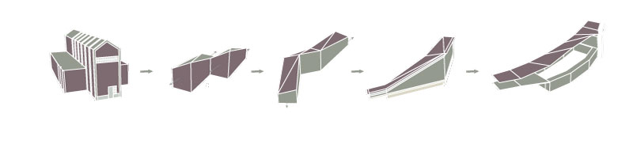

Inflection
The human experience of scale
When inside a factory, it is hard to not feel overwhelmed by the scale. A single-space corridor explodes into a massive cavern full of intimidating machinery. In contrast, supplemental offices and smaller spaces flank the main factory. This sensation inspired the use of scale to manipulate the appearance and feel of this tribute to muncie’s manufacturing history.  At the small scale, visitors feel compressed and hear the loud, sharp sounds of the activities surrounding them. At the larger scale, the sheer size of the building overwhelms the visitor, forcing experiences of the quiet, echoing sensation that a large-scale factory entails. The transitions in and out of both scales occurs smoothly, the building slowly evolving around the visitors until they find themselves hovering over the heart of the exhibition space, wondering when and how the museum became so massive in comparison to the manageable human scale at its entrance.
The inflection design is a series of section cuts through the building that correspond with the various experiences. The entrances are short and confined, which lead the visitors to feel overwhelmed and compressed. As the roof tilts up and the floor drops away, the scale explodes around the visitor, which generates the feeling of being in the heart of a manufacturing building.
North Elevation
South Elevation
Floor Plan Schematic
Most of the museum's facility are located on the lower level in the main exhibition space, accessible by elevators and stairwells that lead to the recessed floor. Visitors travel on heavy-gauge iron balconies and handrails that give the impression that they are within an old factory.
Schematic renderings of the interior and exterior of the Museum.
The museum serves to connect the manufacturing district of Muncie, the greater Muncie community, and the Ball State Community. The design proposes a bridge that would connect the Cardinal Greenway across the White River. The facade of the museum acts like a slingshot, directing views to Indiana Steel and Wire across the river.
The Inflection design is nested in the ground. The elevated catwalk that continues throughout the museum remains at ground level. Meanwhile, visitors on the interior "ground level" are actually recessed into the earth.